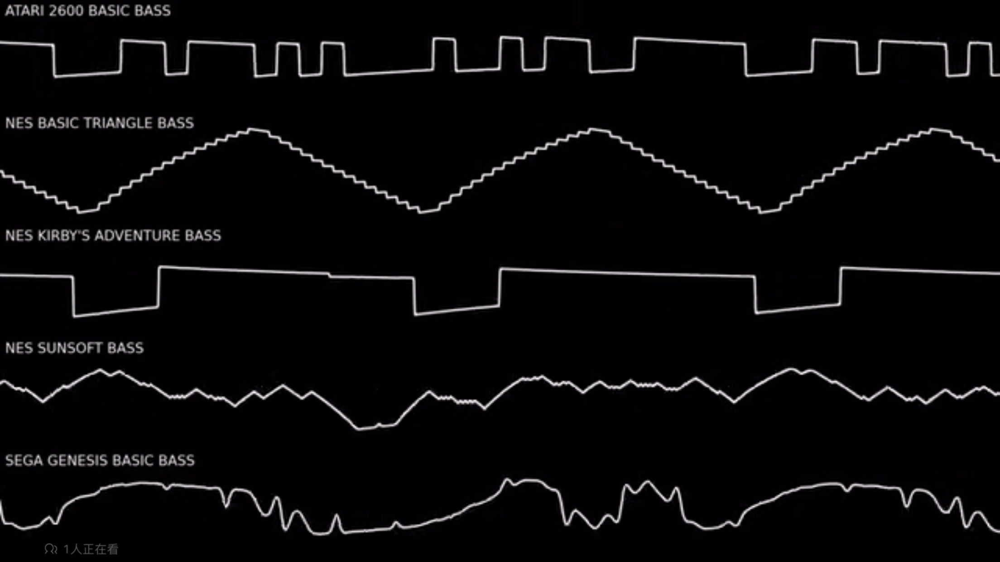

经典游戏界系列
- ATARI雅达利 2600 BASIC BASS
- NES BASIC TRIANGLE BASS
- NES KRIBY'S ADVENTURE BASS
- NES SUNSOFT BASS
- SEGA GENESIS BASIC BASS

经典舞曲音色系列
- Filthy (lead)
- Classic rave (lead)
- Growler (lead)
- Grunge (lead) 垃圾摇滚
- short viking(lead) 海盗
- Trance pluck
- BassDeepSaw(lead)
经典合成技法
- res共振模式为噪音
- pwm
- Chord Synth2 MC
Roland系列
1. Roland系列
2. bassline: TB-303
3. drum: TR-909
4. drum: TR-808